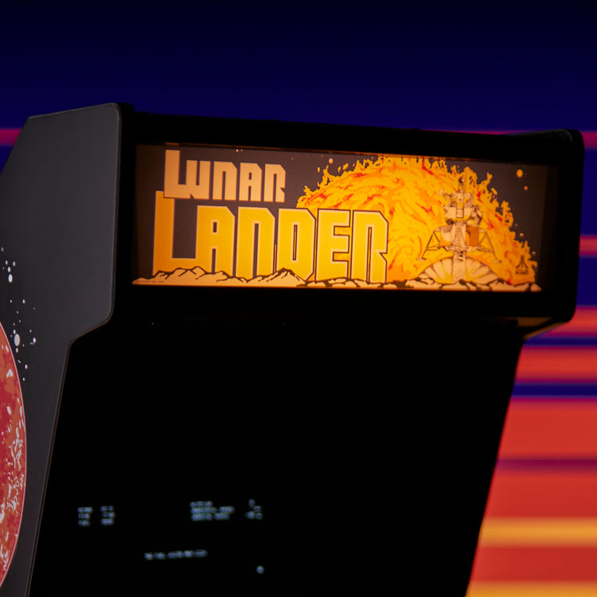
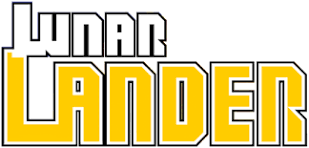
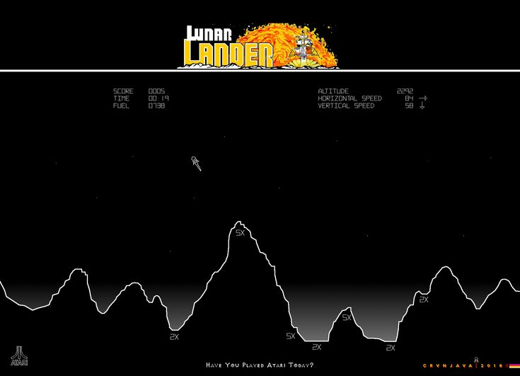
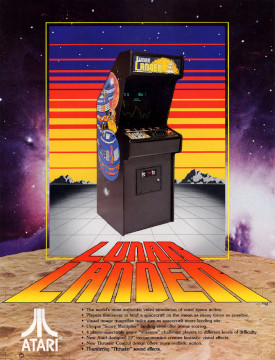

Detalle de misión
Año 2077. Una tormenta solar ha barrido la cara oculta de la Luna, friendo los sistemas de navegación automatizados de las colonias mineras. Todo ha retrocedido a telemetría de bajo nivel y control manual. Como piloto jefe de la División de Recuperación Táctica, tu misión es descender manualmente en los 5 sectores geográficos más peligrosos para evacuar a los investigadores atrapados.
- ↑ Propulsor principal
- ← → Ajuste de rotación

Clasificación Global (Top 10)
Los mejores pilotos de la División de Recuperación Táctica con los alunizajes más precisos.
| Rango | Piloto | Puntaje |
|---|---|---|
| 📡 Conectando con el servidor central... | ||
La Historia del Arcade (1979)

Lanzado en agosto de 1979, diez años después de la histórica misión del Apolo 11, Lunar Lander revolucionó la industria al ser el primer juego de Atari en utilizar un monitor de gráficos vectoriales. En lugar de usar píxeles en bloque, el hardware dibujaba líneas de luz continuas, logrando una estética técnica inigualable.
El nivel de simulación era extremadamente avanzado para la época. El panel de control del arcade incluía una pesada palanca de empuje con resortes mecánicos, lo que exigía a los jugadores dominar la física real de la inercia y la gravedad para no estrellar el vehículo.